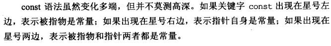

Effective C++（第三版）第一章笔记
《Effective C++》是Scott Meyers的著名技术著作，它开创了Effective系列的技术图书， 包括后来的《Effective Java》、《Effective Python》虽然不是Scott写作， 但都延续了这本书的写作风格和组织形式。
《Effective C++》(第3版) ，副标题“改善程序与设计的55个具体做法” 指出了全书内容是55条关于改善C++程序设计的建议，Scott又将这55条建议分为了9个章分别叙述。
这本书我在2012年时阅读过一遍（2011年学过一学期C++课），当时对C++的实践经验并不多， 有很多章节印象不深，读完就忘了。最近又把这本书翻出来，重新读了一遍， 其中一些实践中比较重要的，记了一些笔记，整理为这一系列博客文章。
1. 视C++为一个语言联邦
这一节指出C++是一个多范式的编程语言，它支持过程式编程、面向对象编程、函数是编程、泛型编程、 元编程。作者同时指出，应该将C++看成一些次语言（sublanguages）的联邦而非单一语言：
- C。C++是以C为基础的，包括内置数据类型、数组、指针、控制语句、代码块、预处理器等。PS: 包括用struct聚合自定义类型。
- Object-Oriented C++。面向对象编程部分是C无法提供的，封装（PS:struct数据成员的访问控制在C中无法提供）、继承、多态。
- Template C++。泛型编程部分，以及由此产生的模板元编程（template meta-programming，TMP），作者也指出TMP很少与主流C++编程互相影响。
- STL。STL是标准模板库（Standard Template Library的简称），作者把他归为一个次语言（sublanguage）相比前面几个略显牵强。作者也指出“同STL一起工作，你必须遵守它的规约”。
作者同时指出，不同的次语言之间，应当遵守的惯例可能会改变，并以函数调用的参数传递为例进行了说明：
- 对于内置类型，按值传递（pass-by-value）通常比按引用传递（pass-by-reference）更高效；
- 对于OO类型，由于用户自定义的构造函数和析构函数的存在，传const引用（pass-by-reference-to-const）往往更好；
- 对于STL的迭代器和函数对象，由于都是在指针的基础上塑造出来的，传值（pass-by-value）再次适用。
结论：C++高效编程的守则视情况而变化，具体取决于你使用的是C++的哪个部分。
2. 尽量以const，enum，inline，替代#define
这一条目主要是想指出“优先编译器而非预处理器”，因为 #define是一条预处理指令，它定义的是预处理宏，预处理器处理的是C/C++源代码文本，并不包含语义。C/C++程序从源代码编译到二进制可执行程序的处理流程为：
hello.c => 预处理器（preprocessor）=> 编译器（compiler）=> 汇编器（assembler）=> 连接器（linker）=> a.out
因为#define是预处理阶段处理的指令，所以它不带有作用域。
结论
- 对于单纯的常量，最好以
const对象或enum替换#define - 对于型似函数的宏（
marcos），最好用inline函数替换#define
3. 尽可能使用const
const允许用于指定语义约束，而且有很多用法，按照使用上下文，可以分为类外和类中；
const用在类外
- 用于全局或
namespace范围内的（非static的）对象； - 用于在文件、函数、区块作用域（block scope）中被声明为
static的对象；
const用在类中
- 用于静态和非静态数据成员；用在静态数据成员上，也就是static const data member，对于整数类型，它可以在类中初始化，其他类型需要在类外初始化；用在一般数据成员上，也就是 const data member，这种数据成员只能在构造函数中通过初始化列表方式指定初始值。
- 用于成员函数，稍后详述；
const用于指针
const用于指针，可以用来 修饰指针本身 或者 修饰指像的对象，例如，如何记住以下这些呢：
char greeting[] = "Hello";
char *p = greeting; // non-const pointer, non-const data
const char *p = greeting; // non-const pointer, const data
char * const p = greeting; // const pointer, non-const data
const char * const p = greeting; // const pointer, const data
作者指出了， 
以及指出了，如下两种形式是完全一样的效果：
const char *p = greeting; // non-const pointer, const data
char const *p = greeting; // non-const pointer, const data
const用于函数
const用于函数，可以修饰函数的参数或返回值。作者指出：
对于运算符重载等 不希望返回值被赋值的使用场景，需要给返回值加上const修饰，尤其是当返回值是引用类型时；
const成员函数
- 约束成员函数内不能修改当前对象的数据成员，
const实际作用于当前对象身上（即this指针所指向的对象）； - 另外，两个成员函数如果只是
const修饰不同其他参数相同，是可以重载的； - 部分
const成员函数内想要修改一些变量，可以使用mutable关键字，以实现所谓的logical constness；
在const和non-const之间消除重复
如果有两个const和non-const成员函数，他们内部实现几乎完全一样，这样就有代码重复问题，如何消除这种重复呢？比如如下示例代码：
class TextBlock {
public:
...
const char& operator[](std::size_t position) const
{
... // do bounds checking
... // log access data
... // verify data integrity
return text[position];
}
char& operator[](std::size_t position)
{
... // do bounds checking
... // log access data
... // verify data integrity
return text[position];
}
private:
std::string text;
};
作者给出了一种解决方案：
让non-const成员函数去调用const成员函数，再把返回值的const限定去掉；
char& TextBlock::operator[](std::size_t position) // now just calls const op[]
{
return const_cast<char&>( // cast away const on op[]’s return type;
static_cast<const TextBlock&>(*this) // add const to *this’s type;
[position] // call const version of op[]
);
}
4. 确定对象被使用前已被初始化
因为：
- 读取未初始化的值会导致未定义的行为（undefined behavior）
- C++中，对于未显示初始化的内置类型，有些上下文（contexts）它会被初始化，有些不会
例如，
int x;，写在全局上下文中，会被初始化为0，而在函数上下文中，它不会被初始化。
所以最佳处理办法就是：永远在使用对象前初始化；内置类型，手动初始化；自定义类型由默认构造函数完成。
另外，需要注意区分赋值（assignment）和初始化（initialization）：
推荐 构造函数上使用成员初始化列表（member initialization list）而非函数体内赋值： 对于自定义类型的数据成员，这种方式可以直接调用它的带参数构造函数，而不用首先调用他们的默认构造函数再调用operator=；对于内置类型，开销一样，但是为了保持一致性最好也使用这种形式； 同时需要注意：
- 初始化列表上，最好初始化所有数据成员，以免遗漏一些成员变量导致未定义的行为；
- 成员变量是
const或者引用，必须使用初始化列表方式初始化； - 初始化列表上最好按照声明的顺序初排列，以免造成晦涩的bug；
“不同编译单元内non-local static对象”的初始化次序问题
另外需要注意的是——“不同编译单元内定义的非局部（non-local）static对象”的初始化次序。包括全局作用域内、namespace作用域内、class内的被声明为static的对象。
问题是： > 如果某个编译单元内的non-local static对象的初始化使用了另一个编译单元内的某个non-local static对象，它所用到的这个对象可能尚未被初始化；因为C++对“定义于不同编译单元的non-local static对象”的初始化次序并无明确定义。
书中给了一个例子，用于说明这个问题，假设你有一个库有这样的一个头文件：
class FileSystem { // from your library’s header file
public:
...
std::size_t numDisks() const; // one of many member functions ...
};
extern FileSystem tfs; // declare object for clients to use
// (“tfs” = “the file system” ); definition
// is in some .cpp file in your library
然后使用这个库的代码如下：
class Directory { // created by library client
public:
Directory( params ); ...
};
Directory::Directory( params )
{
...
std::size_t disks = tfs.numDisks(); // use the tfs object ...
}
Directory tempDir( params ); // directory for temporary files
这两个代码代码段中tfs和tempDir不在一个编译单元内，程序运行时，这两个全局变量的构造函数都会在main()之前执行，但是他们的次序没有保证；如果tfs先构造完成没有问题，否则，tempDir对象执行构造函数的过程中，将会使用一个未初始化的对象。
解决方法:
> 将每个non-local static对象搬到自己的专属函数内（该对象在次函数内被声明为static），这些函数返回一个reference指向它所包含的对象。然后用户调用这些函数，而不直接指涉这些对象。换句话说，non-local static对象被local static对象替换了。Design Pattern的迷哥迷姐们想必认出来了，这是Singleton模式的一个常见实现手法。
修改后的代码：
FileSystem& tfs() // this replaces the tfs object; it could be
{ // static in the FileSystem class
static FileSystem fs; // define and initialize a local static object
return fs; // return a reference to it
}
Directory::Directory( params ) // as before, except references to tfs are
{ // now to tfs()
...
std::size_t disks = tfs().numDisks();
...
}
Directory& tempDir() // this replaces the tempDir object; it
{ // could be static in the Directory class
static Directory td( params ); // define/initialize local static object
return td; // return reference to it
}
- 原文作者：Siwei Xu
- 原文链接：https://xusiwei.github.io/post/2020/02/effective-cpp-notes/
- 版权声明：本作品采用知识共享署名-非商业性使用-禁止演绎 4.0 国际许可协议进行许可，非商业转载请注明出处（作者，原文链接），商业转载请联系作者获得授权。